Contents
Basic commands
In ConTeXt, one doesn't usually type quotation marks by hand, but rather use logical markup. There are two commands already defined for quotations: \quote and \quotation, which by default produce single and double quotation marks around their given argument, respectively.
-
\quotation{This is a \quote{quote} in a quotation.}
- 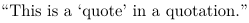
For longer texts, one can also use the \startquote and \startquotation form of the above commands (paired with a corresponding \stop<command>):
-
As Edsger Dijkstra once wrote: \startquotation \input dijkstra \stopquotation
- 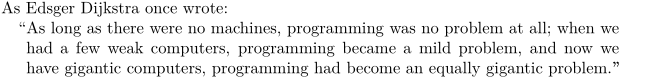
Customizing quotations
By language
ConTeXt's quotation commands are language-aware. To make quotation marks follow the conventions of a particular language, it is usually enough to set the document's language with the \language command.
-
\setupbodyfont[big] \language[en-us] \quotation{This is a \quote{quote} in a quotation} \language[en-gb] \quotation{This is a \quote{quote} in a quotation} \language[fr] \quotation{This is a \quote{quote} in a quotation}
- 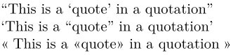
Directly
You can create new quotation commands using \definedelimitedtext,
-
\definedelimitedtext[cowsay][ left={\mirror{\externalfigure[cow][height=1.5ex]}}, right={\externalfigure[cow][height=1.5ex]}, location=paragraph, ] \setupbodyfont[big] \cowsay{Short cowquote} \blank \startcowsay Long multiline cowquote. \stopcowsay
- 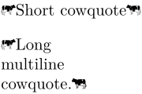
and customize existing ones using \setupdelimitedtext.
-
\setupbodyfont[big] \quote{Some text} \setupdelimitedtext [quote] [style=\WORD, color=darkred] \quote{Some text} \setupdelimitedtext [quote] [symcolor=green] \quote{Some text}
- 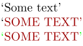
Nested quotations
Instead of manually alternating between \quotation and \quote when typesetting nested quotations, it is possible to set up your commands to automatically change the quotation marks when in different nesting levels.
In the following example, we'll add this behaviour to \quotation, but you may also wish to define a new quotation command for this (using \definedelimitedtext).
-
\setuppapersize[A8,landscape] \setupdelimitedtext % set up first quotation level [quotation:1] [left={\symbol[leftquotation]}, right={\symbol[rightquotation]}] \setupdelimitedtext % set up second quotation level [quotation:2] [left={\symbol[leftquote]}, right={\symbol[rightquote]}] \setupdelimitedtext % set up all other quotation levels [quotation] [left={«}, right={»}] \starttext \quotation{A long quotation in which one character says, \quotation{Eh? What am I supposed to say? Something like, \quotation{Quotations in this sentence are nested}?}} \stoptext
- 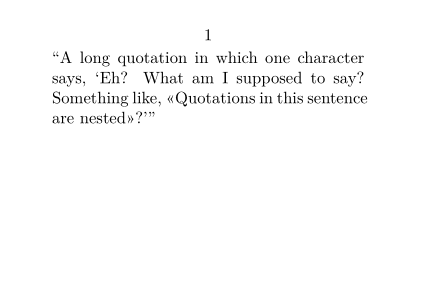
TeX-style quotes
In the original TeX, opening and closing quotation marks could be typeset with ` and ', respectively. While this is not considered a best practice anymore (ConTeXt strives to separate form from content), in some situations you may wish to restore compatibility with TeX behaviour.
Using existing font features
ConTeXt offers two non-standard font features to help us restore the old TeX behaviour: trep, for TeX replacements in general, and tquo, specifically for restoring TeX's double quote replacement.
-
\tfd ``Default \ConTeXt{} behaviour'' \blank[line] \definefontfeature[TeX][default][tquo=yes, trep=yes] \feature[+][TeX] ``Old \TeX{} behaviour''
- 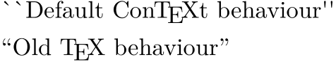
Note, however, that this emulation of behaviour is not perfect: single left quotes (`) and single-character double right quotes (") still won't get replaced:
-
\definefontfeature[TeX][default][tquo=yes, trep=yes] \feature[+][TeX] \tfd ' ` '' `` "
- 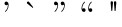
Using Lua
To address the previous method's shortcomings, we may use Lua code to define our own font feature, taking care of ` and " substitutions.
-
\setuppapersize[A8,landscape] \startluacode fonts.handlers.otf.addfeature { name = "mysubs", type = "substitution", data = { [0x0060] = 0x2018, [0x0022] = 0x201D, } } \stopluacode \setupbodyfont[times,8pt] \definefontfeature[TeX][default][tquo=yes, trep=yes, mysubs=yes] \feature[+][TeX] \starttext \tfd ' ` '' `` " \stoptext
- 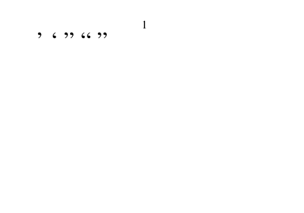
This code will be processed during font loading, so make sure you place it before the \setupbodyfont call.
Long quotations and extracts
The following may serve as a guide to others in formatting long quotations or extracts:
Long quotations defined with \definestartstop
In body text:
\defineblank[extractdistance][3pt] \definestartstop[extract][ before={\blank[extractdistance] % [extractdistance,force] causes spurious % overfull \hbox warnings \setupnarrower[left=1.5pc,right=1.5pc] \startnarrower[left,right] \noindent}, after={\stopnarrower \blank[extractdistance] \indenting[yes]}]
In footnotes:
\defineblank[footenoteextractdistance][2.7pt] \definestartstop[fnextract][ before={\blank[footenoteextractdistance] \setupnarrower[left=1.5pc,right=1.5pc] \startnarrower[left,right] \noindent}, after={\stopnarrower \blank[footenoteextractdistance] \indenting[yes]}]
Long quotations defined with \definedelimitedtext
In body text:
\defineblank[extractdistance][3pt] \definedelimitedtext[extract][blockquote] \setupdelimitedtext [extract] [spacebefore=extractdistance, leftmargin=1.5pc, before={\setupindenting[next]}]
In footnotes:
\defineblank[footenoteextractdistance][2.7pt] \definedelimitedtext[fnextract][blockquote] \setupdelimitedtext [fnextract] [spacebefore=footenoteextractdistance, leftmargin=1.5pc, before={\setupindenting[next]}]
Example using \setupdelimitedtext
Here is how to get indented quotations set in small type:
-
\setuppapersize[A7] %\setupdelimitedtext % [blockquote] % [style={\setupbodyfont[small]}] \setupdelimitedtext [blockquote] [style=\slx, before={\setupinterlinespace[line=2.4ex]}] \starttext Hello \startblockquote \input knuth %\par \stopblockquote Hello \stoptext
- 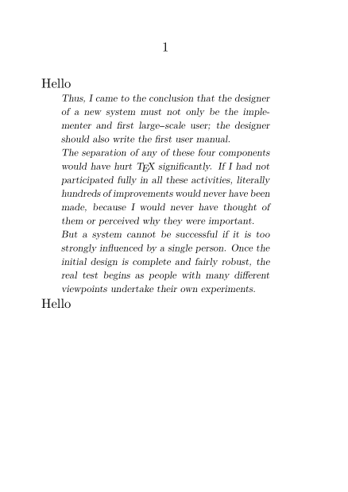
The \par inside the block quotation keeps TeX's paragraph builder happy. Otherwise the last paragraph in the block quotation gets the wider linespacing of the outside environment rather than the narrower linespacing appropriate to the smaller text; Alternately, one can add before={\setupinterlinespace}, as shown above.
Using style=small does not work as well as style={\setupbodyfont[small]} or style={\setupbodyfont[9pt]}, because small shrinks only the font size but not the linespacing. Alternately, by using before={\setupinterlinespace}, one can then use commands such as style=\tfx, setting the size relatively rather than absolutely, advantageous for nestling and for inclusion in footnotes, for example.
Pull quotes
Pull quotes can be implemented by floating a framed text. For example, the following definitions set up pull quotes with no border, and then you can drop a pull quote in your main text like this:
-
\setuppapersize[A7] \usemodule[visual] % For \fakewords \definefloat % Define a new type of float [pullquote] [pullquotes] \setupcaption % Set it to have no captions [pullquote] [location=none] \defineframedtext % Define a new type of framed text [pullquote] % with no visible frame [frame=off] \starttext \fakenwords{30}{2} \placepullquote[right]{}{ \startpullquote[width=4cm] \tfc “All work and no play makes Jack a dull boy.” \stoppullquote} \fakenwords{30}{1} \stoptext
- 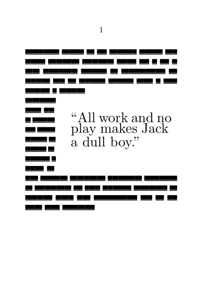
Quotes symbols
Single quote
For short quotes you can switch the language (and depending setups like quotation marks) with the language tag like {\de das ist Deutsch}. If you switch between longer sections or if the two-letter language code has some other meaning (like \sl stands for slanted and can't be used to start Slovenian) you should use \language[sl].
Quotesingle
‘quotesingle’ (Unicode character 0x0027) is the unsexed single quotation mark (or quote, or apostrophe) character '. Putting this character in a ConTeXt (or other TeX) source file will usually result in the the ’ (quoteright) character in the output. Usually, this is what you want: it lets you use the more easily typed ' as an apostrophe in the source file, and have it typeset as the more aesthetically pleasing ’.
However, this causes problems if you actually want the ' character itself in the output. In MkIV, for OpenType fonts, the substitution is controlled by a non-standard OTF feature called tquo (short for ‘TeX quotes’). So we can get the ' character throughout the document by ensuring that this feature is switched off in the defaults:
\definefontfeature[default][liga=yes,kern=yes,tlig=yes,trep=no,tquo=no,mode=node] \starttext A straight quotation mark: ' \stoptext
But perhaps you want TeX replacement on by default so you can keep getting pretty apostrophes, and you just need the quotesingle character occasionally. In this case you can define a special feature set and activate it only when necessary.
\definefontfeature[default][liga=yes,kern=yes,tlig=yes,trep=yes,tquo=yes,mode=node] \definefontfeature[notrep][trep=no,tquo=no] \def\realquotesingle{{\addfs{notrep}'}} \starttext A straight quotation mark: \realquotesingle . A normal quotation mark: '. \stoptext
Note that ‘mode=node’ is necessary for this to work. Also, as stated, this technique applies only to OTF fonts under MkIV. See also this mailing list discussion.
clean up between wiki pages ==> merge with Quotes, in symbol part